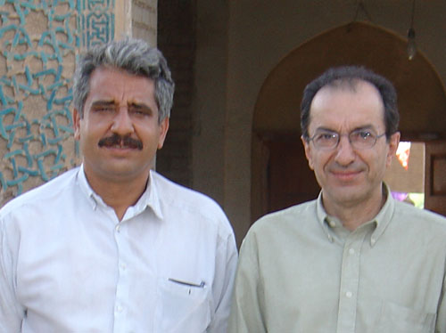

Hamid is an accomplished desert explorer. He is also a wonderful off-road car mechanic. I met him and his friends when they were planing to cross Rig-e Jenn. area. They offered me to join them and we did a few exploratory trip. Eventually I went to the center of Rig-e Jenn with him. These days he is thinking of crossing the Lut desert.

Hamid Boreiri and Ali Parsa in Bastam, Nov. 2004